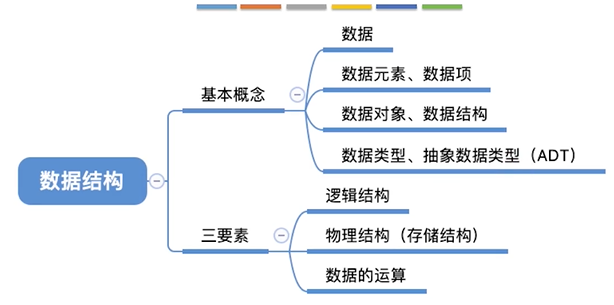
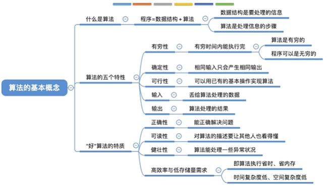
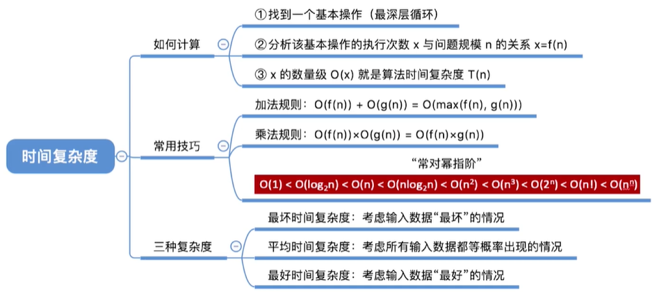
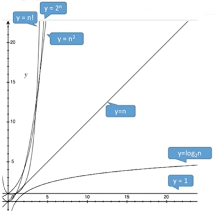
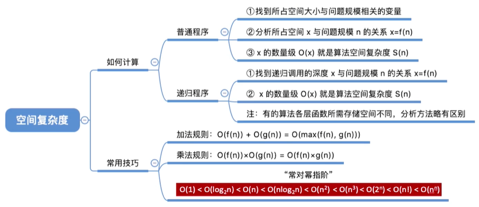

数据结构笔记
数据结构
“唯一可以确定的是，明天会使我们所有人大吃一惊” ——阿尔文·托夫勒
数据结构的基本概念

基本概念
数据
数据是信息的载体，是描述客观事物属性的数、字符及所有能输入到计算机中并被计算机程序识别和处理的符号的集合。数据是计算机程序加工的原料。
数据元素、数据项
数据元素是数据的基本单位，通常作为一个整体进行考虑和处理。一个数据元素可由若干数据项组成，数据项是构成数据元素的不可分割的最小单位。
数据结构、数据对象
数据结构是相互之间存在一种或多种特定关系的数据元素的集合。
数据对象是具有相同性质的数据元素的集合，是数据的一个子集。
数据类型、抽象数据类型（ADT）
数据类型是一个值的集合和定义在此集合上的一组操作的总称
原子类型。其值不可再分的数据类型。
结构类型。其值可以再分解为若干成分（分量）的数据类型。
抽象数据类型是抽象数据组织及与之相关的操作。
ADT用数学化的语言定义数据的逻辑结构、定义运算。与具体的实现无关。
三要素
逻辑结构
- 集合
- 各个元素同属一个集合，别无其它关系
- 线性结构
- 数据元素之间是一对一的关系。除了第一个元素，所有元素都有唯一前驱；除了最后一个元素，所有元素都有唯一后继
- 树形结构
- 数据元素之间是一对多的关系
- 图状结构（网状结构）
- 数据元素之间是多对多的关系
物理结构（存储结构）
- 顺序存储
- 把逻辑上相邻的元素存储在物理位置上也相邻的存储单元中，元素之间的关系由存储单元的邻接关系来体现。
- 链式存储
- 逻辑上相邻的元素在物理位置上可以不相邻，借助指示元素存储地址的指针来表示元素之间的逻辑关系。
- 索引存储
- 在存储元素信息的同时，还建立附加的索引表。索引表中的每项称为索引项，索引项的一般形式是（关键字，地址）
- 散列存储
- 根据元素的关键字直接计算出该元素的存储地址，又称哈希（Hash）存储
数据的运算
- 运算的定义
- 是针对逻辑结构的，指出运算的功能
- 运算的实现
- 是针对存储结构的，指出运算的具体操作步骤
算法

特性
- 有穷性
- 一个算法必须总在执行有穷步之后结束，且每一步都可在有穷时间内完成。
- 算法必须是有穷的，而程序可以是无穷的
- 确定性
- 算法中每条指令必须有确切的含义，对于相同的输入只能得到相同的输出
- 可行性
- 算法中描述的操作都可以通过以及实现的基本运算执行有限次来实现。
- 输入
- 一个算法有零个或多个输入，这些输入取自于某个特定的对象的集合。
- 输出
- 一个算法有一个或多个输出，这些输出是与输入有着某种特定关系的量。
效率
- 时间复杂度
- 事前预估算法时间开销T(n)与问题规模n的关系
- 可以只考虑阶数高的部分
- ‘O’表示“同阶”，同等数量级。即：n->∞时，二者之比为常熟
- 时间复杂度口诀：常对幂指阶
- 注意！算法的性能问题只有在n很大的时候才会暴露出来
- 结论
- 顺序执行的代码只会影响常数项，可以忽略
- 只需挑循环中的一个基本操作分析它的的执行次数与n的关系
- 如果有多层嵌套循环，只需关注最深层的循环进行循环了几次
- 总结

- 空间复杂度
- 总结
